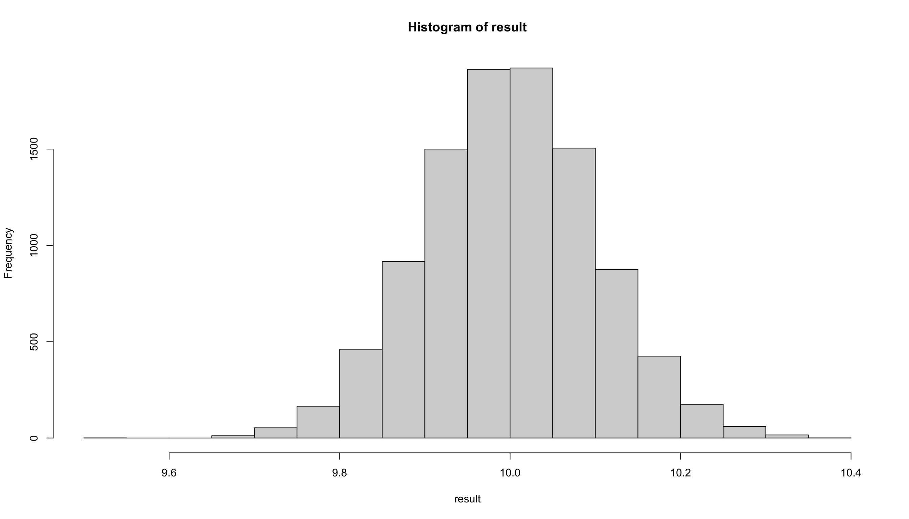
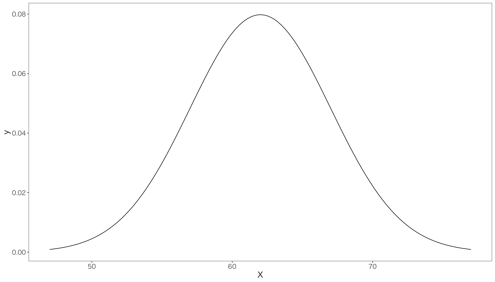
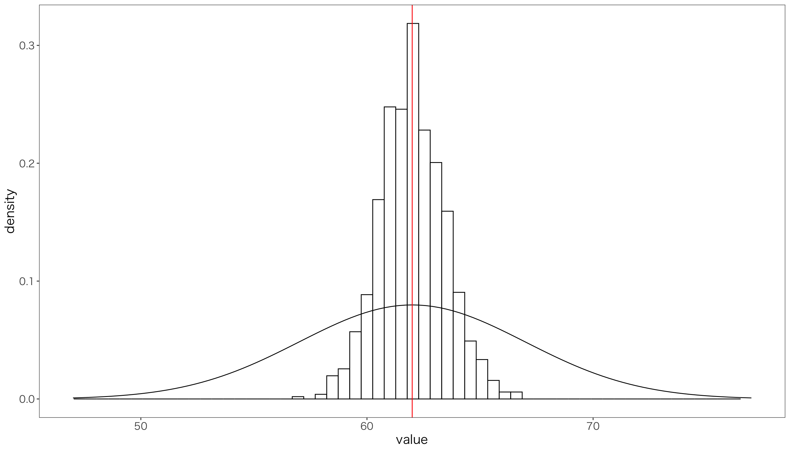
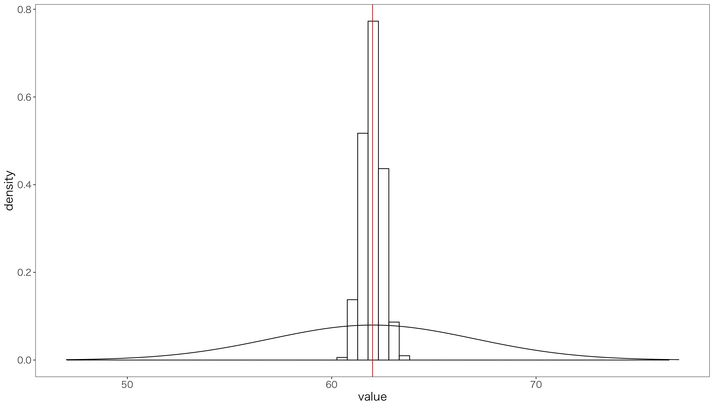
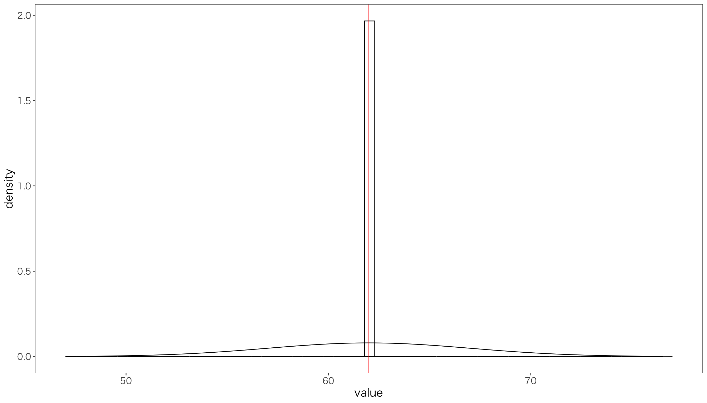
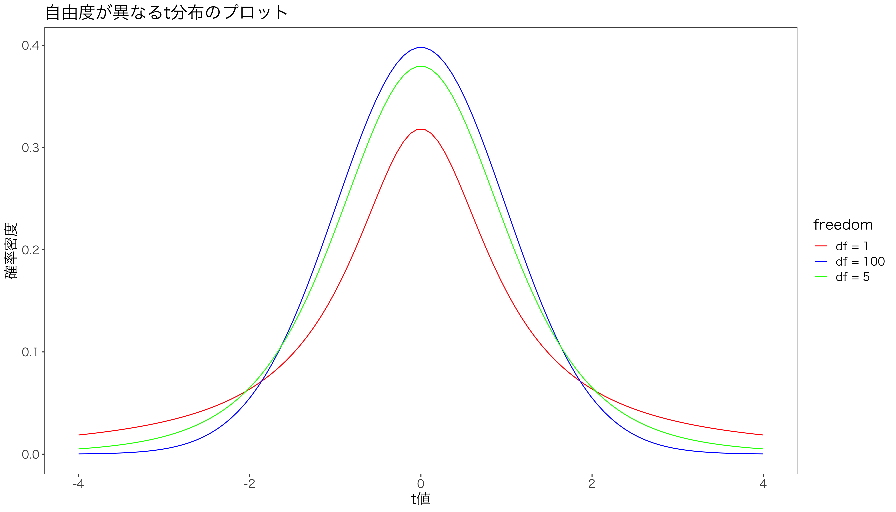
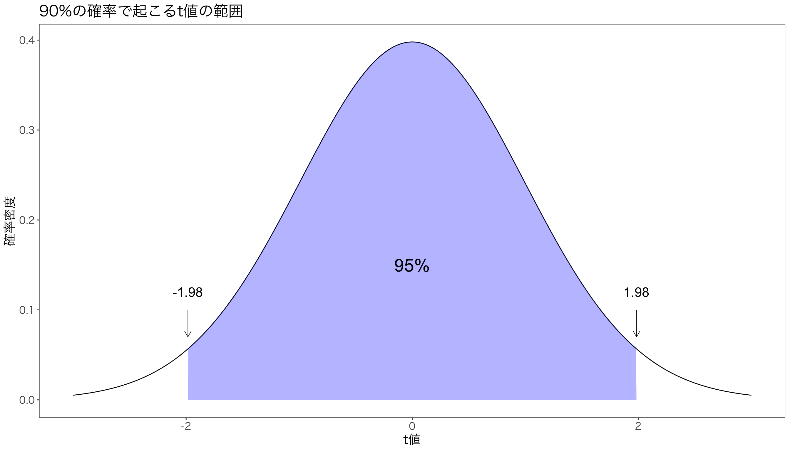
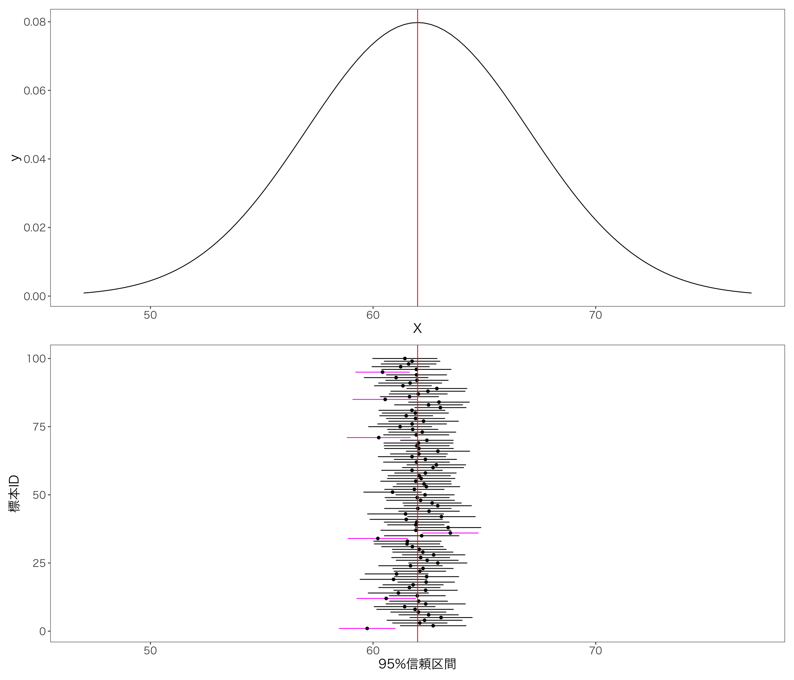
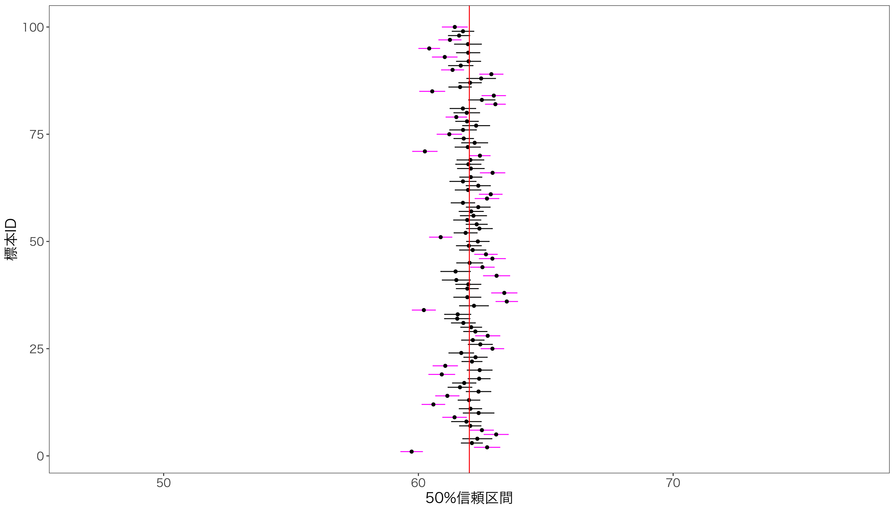

n = 100 # 標本サイズ
x <- rnorm(n, 10, 1) # 標本抽出
mean(x) # 標本平均[1] 10.07883母集団(population)とは、研究問題(research question)に基づいて選定された対象全体の集まりを指します。 しかし、その全体を調査・分析することは、時間や費用の制約から現実的ではありません。そのため、母集団から一部を抜き出した標本(sample)を選び、この標本を通じて母集団の特性を推定します。
統計学とは、限られた標本から母集団の特性（母数またはパラメータとも呼ばれます）をどのように探求するかについて研究する学問です。 例えば、作ったお味噌汁全体の味を確かめるには、お味噌汁を全部飲むのではなく、しっかりお味噌汁を鍋の中でかき混ぜてから、スプーン一杯を試飲し、その全体の味を推定する、という作業と同じです。
標本の特徴を調べることで，観察できない母集団の母数(parameter)を推定することを，統計的推定(statistical estimation)とよびます。 統計的推定には，標本から計算される統計量(statistic)を用います。 母数の推定のために利用される統計量を推定量(estimator)といいます。
母数は定数ですが，標本が変われば値が変わるので推定量は確率変数です。 1つの標本から計算された1つの標本平均は，たまたま今手元にある標本から計算された1つの平均値にすぎず，別の標本を集めて再度標本平均を計算すれば，異なる値になることが予想されます。
また母数を推定するために用いられる統計量と一般的な数式記号は以下の通りです。
| 母数 | 記号 | 統計量 | 記号 |
|---|---|---|---|
| 母平均 | \mu | 標本平均 | \bar x |
| 母比率 | \pi | 標本比率 | p |
| 母分散 | \sigma^2 | 標本分散 | s^2 |
| 母標準偏差 | \sigma | 標本標準偏差 | s |
標本から母数を推定するためには，適切な方法で標本を集めなければなりません。 1限の講義に出席している学生にアンケートをとっても，学生全体の推定には適切とはいえない標本があつまるでしょう。
母集団から標本を選ぶ標本抽出方法として代表的なものが，単純無作為抽出(simple randome sampling)です。 単純無作為抽出で選ばれた標本は、母集団の偏りのない標本といえます。 たとえば，平均10，標準偏差1の正規分布からランダムに100個のデータを抽出して標本を作り，その平均値を計算してみます。
平均値は10.0788268となり，母平均10とほぼ同じ値になりましたが、ぴったり10ではありませんよね。 この母平均10と標本平均10.0788268の差を誤差といい、母集団と標本のズレを意味します。
平均10，標準偏差1の正規分布からランダムに100個のデータを抽出して標本を作り，その平均値を計算する，という試行(trial)を10000回繰り返して，10000個の標本から10000個の標本平均を計算して、標本平均のヒストグラムで表示してみます。
n = 100 # 標本サイズ
trial = 10000 # 標本数
result <- numeric(trial) # 結果を入れる空の変数
for (i in 1:trial) { # 以下の処理をtrial回繰り返す
x <- rnorm(n, 10, 1) # 標本抽出
result[i] <- mean(x) # 標本平均
}
hist(result) # 基本関数histでヒストグラム作成
この図をみると、キレイな左右対称の釣り鐘型の分布になっていることが分かります。 この10000個の平均値の平均は，
とほぼ10と等しくなります。 このように，標本数を増やしていくと，標本平均の平均値は母平均に近づく，という法則を大数の法則(law of large numbers)といいます。 統計学における極めて重要な概念です。
関心の対象となる母集団から同じサイズの標本を取り出すにしても，その組み合わせは1つではありません。
たとえば，プレゼミのメンバー25名から5名の標本を選ぶなら，その組み合わせは，
{}_{25} \mathrm{C}_5 = \binom{25}{5} = \frac{25!}{5!(25-5)!} = 53130
たったこの人数でもこれだけの組み合わせがあるので，すべての株式会社から標本を選ぶ組み合わせは無数になります。 したがって，その標本から計算した統計量は標本ごとに異なる値となります。このような統計量の分布を標本分布(sampling distribution)といいます。
「偏りのない」(unbiased)標本をたくさん集めることができれば，標本分布は母集団の分布に近づきます。 この多くの標本から計算される統計量の平均が母数に一致する性質を不偏性(unbiasedness)といい，普遍性をもつ推定量を不偏推定量(unbiased estimator)といいます。
たとえば，5個のデータ(2,4,6,7,9)について考えてみましょう。 ここから3つのデータを取り出して標本を作ります。 その組み合わせは，
{}_{5} \mathrm{C}_3 = \binom{5}{3} = \frac{5!}{3!(5-3)!} = 10
となります。 この10個の標本から計算される標本分散と標本平均を計算してみます。 それぞれの定義は次のとおりです。
\begin{aligned} \text{標本平均} &= \frac 1n \sum_{i=1}^n x_i \\ \text{標本分散} &= \frac 1n \sum_{i=1}^n \left (x_i - \bar{x} \right )^2 \end{aligned} 標本平均と標本分散を計算する関数を作ります。 関数の作り方については，また後で勉強する予定ですので，ここでは関数の使い方だけを覚えておいてください。
これで平均と分散を計算する関数ができました。 これを使って，標本平均と標本分散を計算してみましょう。 まず5のサイズをもつ母集団から標本サイズ3の標本を10通り作成します。
[1] 5.6 [,1] [,2] [,3] [,4] [,5] [,6] [,7] [,8] [,9] [,10]
[1,] 2 2 2 2 2 2 4 4 4 6
[2,] 4 4 4 6 6 7 6 6 7 7
[3,] 6 7 9 7 9 9 7 9 9 9これですべての組み合わせを作り出せましたので，それぞれの標本から標本平均と標本分散を計算します。 各列に，先ほど作ったmeanp()関数をapply関数で適用し，10の標本平均を作り，sample_meanという変数に代入し，その平均を計算します。
標本平均の平均5.6が母平均5.6に一致したので，標本平均は不偏推定量であることが分かります。
次に分散を計算してみましょう。
標本分散の平均4.8666667は母分散5.84より小さな値になりました。つまり標本分散は不偏推定量ではありません。またこの結果は自明のことです(後述します)。 これには自由度という概念が関係しています。 自由度とは，標本から計算される統計量の値を決めるのに使える情報の数のことですが，ここではスルーして，標本分散ではなく標本不偏分散を計算します。 違いは，分母がnではなくn-1になっていることです。 \text{標本不偏分散} = \frac{1}{n-1} \sum_{i=1}^n \left (x_i - \bar{x} \right )^2
Rの基本関数であるvar()は標本分散ではなく標本不偏分散を計算するので，これを使って先ほどの計算を再現してみましょう。
[1] 7.3res <- combn(x,3) # 3つのデータを取り出す組み合わせ
sample_var <- apply(res, 2, var)
meanp(sample_var) # 標本平均の平均は5.6[1] 7.3母分散と標本不偏分散の平均は一致しました。 つまり母数である母分散を推定するためには，標本不偏分散を使う必要があるということです。
とはいえ，違いはnで割るか，n-1で割るか，という点だけなので，標本サイズnが大きければ，標本分散と標本不偏分散の違いは無視できるので，経営学の研究ではそこまで気にしなくてもよいでしょう。
標本数が増えると，標本分布は母集団の分布に近づく，という特徴をもつ推定量を一致推定量(consistent estimator)といいます。 これが最も重要な特徴です。
例えば，関心のある母集団が
という母数をもつ正規分布に従っている，としましょう。 グラフにする前に，必要なパッケージの読み出しと，グラフのスタイルを設定します。
グラフにすると次のようになります。
p <- ggplot(data = data.frame(X = c(47,77)))
p <- p +aes(x = X)
p <- p + stat_function(
fun = dnorm,
args = list(mean = 62, sd = 5)
) + mystyle
print(p)
ここから，標本サイズ10の標本を取り出し，標本平均を計算する，という試行を1000回繰り返し，1000個の標本平均を作りましょう。
n = 10 # 標本サイズ
trial = 1000 # 試行回数
result <- numeric(trial) # 結果を入れる空の箱
for (i in 1:trial) { # 以下をtrial回繰り返す
x <- rnorm(n, 62, 5) # 標本を生成
result[i] <- mean(x) # 標本平均を計算
}
mean(result) # 標本平均の平均[1] 62.0268ヒストグラムの中心が母平均の62に近づいていることが分かります。 標本平均の平均は62.0267953となりますが，これは母平均62に近い値になっています。
グラフで確認すると，
result <- as.tibble(result)
g <- ggplot(result) + aes(value) # 軸の設定
g <- g + geom_histogram( # ヒストグラム
aes(y = ..density..), bins = 60, # y軸を密度に
fill = "white", color = "black") # ヒストグラムの色
g <- g + stat_function(fun=dnorm, args=list(mean = 62, sd = 5)) # 母集団の分布
g <- g + geom_vline(xintercept = 62, color = "red") # 母平均の縦線
g <- g + xlim(47,77) + mystyle # x軸の範囲を指定
print(g)
と母平均と標本平均のヒストグラムの中心が一致していることが分かります。 ただ，母分散と比べて標本分散が非常に小さいことが一目瞭然です。
標本サイズを先ほどの100倍の1000として，同じ試行を1000回繰り返してみましょう。

どんどん標本サイズを増やして，100000として，同じ試行を1000回繰り返してみましょう。

このように，標本平均の分散は，標本サイズが大きくなるにつれて，どんどん小さくなっていくことが分かります。 たとえば30から150の間の値をとり，母平均62，母分散25の正規分布にしたがう母集団から標本を採ったとしましょう。 母集団が30から150の値をとるのに対して，標本サイズが大きいとき，標本平均が30とか150の値をとることはあり得ません。
標本平均の標準偏差SD(\bar x)は，
SD(\bar x) = \frac{\sigma}{\sqrt{n}}
このように，標本サイズを大きくすると，標本平均が母平均の近くの値をとる確率が大きくなる，という性質を一致性(consistency)と呼び，一致性をもつ推定量を一致推定量(consistent estimator)といいます。
標本から得た統計量をつかって母数である母平均を予想したいとき，手元にある1つの標本から計算した標本平均は，どの程度の精度をもつでしょうか？
信頼区間(confidence interval)は，非常に難解な概念です。 まず確認として，母数である母平均は観察できない数値ですが，確率変数ではなく定数です。 この母平均が計算した信頼区間に含まれるか，含まれないか，のどちらかしかありません。 信頼区間の正しい解釈は，母集団から標本を取ってきて、その標本平均から95%信頼区間を求める、という作業を100回やったときに、95回はその区間の中に母平均が含まれる，というものです。 この信頼区間の計算をしてみます。
標本の統計量は確率変数なので，統計量は分布します。 標本平均の標準偏差は，
SD(\bar x) = \frac{\sigma }{\sqrt{n}}
と定義されます。 ここでnは標本サイズなのですぐ分かりますが，$は母標準偏差なので未知です。 そこでまず$の推定のために，不偏標準偏差
u = \sqrt{\frac{1}{n-1} \sum_{i=1}^n \left (x_i - \bar{x} \right )^2}
を計算します。 先ほど定義したSD(\bar x)の分子\sigmaの代わりに推定量uを使ったものを標準誤差(standard error: SE)と呼びます。 SE = \frac{u}{\sqrt{n}}
この標準誤差を標本平均の標準誤差の代わりに使います。
さて，とうとう統計学の真骨頂であるt分布の登場です。 t分布(t-distribution)は，母集団が正規分布にしたがうとき，標本平均の分布が従う確率分布です。 絵で描くとこんな感じです。
x <- seq(-4, 4, length.out = 100)
df1 <- dt(x, df = 1)
df5 <- dt(x, df = 5)
df100 <- dt(x, df = 100)
# データフレームに変換
df <- data.frame(x = rep(x, 3),
y = c(df1, df5, df100),
freedom = factor(rep(c("df = 1", "df = 5", "df = 100"), each = length(x)), ordered = TRUE)
)
# プロット
ggplot(df, aes(x = x, y = y, color = freedom)) +
geom_line() +
scale_color_manual(values = c("red", "blue", "green")) +
labs(title = "自由度が異なるt分布のプロット") + xlab("t値") + ylab("確率密度") + mystyle
標本平均\bar xから母平均を引いて，それを標準誤差SEで割った値をt値(t-value)といい，このt値はt分布にしたがうことが知られていますが，ここでは詳細に触れません。
自由度99のt分布の場合，95%の確率でt値は-1.98から1.98の間に入ります。
# 自由度を設定
df <- 99
# データを生成
data <- data.frame(x = seq(-5, 5, by = 0.01))
data$y <- dt(data$x, df)
# 90%の領域の上限と下限をqt()で計算
ql <- qt(0.025, df)
qu <- qt(0.975, df)
# t分布を書く
g <- ggplot(data) + aes(x=x, y=y) + geom_line()
g <- g + geom_area(data = data %>% filter(x > ql & x < qu), fill = "blue", alpha = 0.3)
g <- g + xlab("t値") + ylab("確率密度") + labs(title = "90%の確率で起こるt値の範囲") + xlim(-3,3)
g <- g + annotate(geom = "text", x = qu, y = 0.12,
label = "1.98", size = 6) +
annotate(# 始点や終点などを指定して矢印を追加
geom = "segment", x = qu, xend = qu,
y = 0.1, yend = 0.07, color = "black", size = 0.3,
arrow = arrow(length = unit(0.3, "cm"))
)
g <- g + annotate(geom = "text", x = 0, y = 0.15,
label = "95%", size = 8)
g <- g + annotate(geom = "text", x = ql, y = 0.12,
label = "-1.98", size = 6) +
annotate(# 始点や終点などを指定して矢印を追加
geom = "segment", x = ql, xend = ql,
y = 0.1, yend = 0.07, color = "black", size = 0.3,
arrow = arrow(length = unit(0.3, "cm"))
) + mystyle
print(g)
t分布は確率分布ですので，面積は1となります。 青い領域が95％の確率でt値が入る範囲です。 ということは両側の白い領域は，片方が2.5％と面積となっています。 これを次のように書きます。
[ -t _{100-1, 0.025}, \ t_{100-1, 0.025}]
t分布表を使って，自由度99のときのt値を調べると，t_{100-1, 0.025} = 1.98となります。 Rだとqt()関数を使って計算できます。
標本サイズnの標本から計算される標本平均\bar xから計算される次のt値 t = \frac{\bar x - \mu}{SE} が自由度n-1のt分布にしたがうことが知られています。
つまり，標本の95％のt値は，t_{n-1, 0.025}からt_{n-1, 0.975}の間に入ります。 よって，
-t _{n-1, 0.025} \leq \frac{\bar x - \mu}{SE} \leq t_{n-1, 0.025} 両辺にSEをかけると， -t _{n-1, 0.025} \times SE \leq \bar{x} - \mu \leq t_{n-1, 0.025}\times SE
この区間を95％信頼区間といいます。
信頼区間とは、観察できない真の値である母数が存在し、その母集団から標本を抽出し、標本平均を計算するということを繰り返したときに、95%の標本平均の信頼区間の中に真の値である母平均が入っている、ということです。
先の例を使って、信頼区間を表現してみます。 いま、母集団が平均62，標準偏差5の正規分布にしたがうとします。 この母集団から標本サイズ50の標本を100個抽出して，標本平均と標本標準偏差を計算します。
trial <- 100 # 標本数
n <- 50 # 標本サイズ
mu <- 62 # 母平均
sigma <- 5 # 母標準偏差
set.seed(1234) # 乱数を準備
# 標本ごとの統計量を収納する空のベクトルを作成
sample_mean <- numeric(trial) # 標本平均の入れ物
sample_sd <- numeric(trial) # 標本標準偏差の入れ物
uplimit <- numeric(trial) # 信頼区間の上限の入れ物
lowlimit <- numeric(trial) # 信頼区間の下限の入れ物
# 標本の数だけ，以下の計算を繰り返す
for (i in 1:trial) {
temp_sample <- rnorm(n, mu, sigma) # 標本を抽出
sample_mean[i] <- mean(temp_sample) # 標本平均を計算
sample_sd[i] <- sd(temp_sample) # 標本標準偏差を計算
}
# 信頼区間の計算
p <- .95 # 信頼水準の設定 (95%信頼区間)
alpha <- qt( (1 - p) / 2, df = n - 1, lower.tail=FALSE) # 限界値の計算
# 信頼区間の上限と下限の計算
uplimit <- sample_mean + alpha * sample_sd/sqrt(n) # 信頼区間上限
lowlimit <- sample_mean - alpha * sample_sd/sqrt(n) # 信頼区間下限
# 信頼区間の計算結果をデータフレームにまとめる
confidence_interval <- data.frame(
標本平均 = sample_mean,
上限 = uplimit,
下限 = lowlimit,
標本番号 = 1:trial
)
# Plot using ggplot2
g_ci <- ggplot(confidence_interval) +
aes(x = 標本番号, y = 標本平均)
# aes(x = reorder(標本番号, 標本平均), y = 標本平均)
g_ci <- g_ci + geom_errorbar( # 信頼区間を表す線を描く
aes(ymin = 下限, ymax = 上限,
color = (下限 <= 62 & 上限 >= 62)
), width = 0.2)
g_ci <- g_ci + scale_color_manual( # 色の設定
values = c("magenta", "black"),
guide = FALSE)
g_ci <- g_ci + geom_point(aes(y = 標本平均)) # 標本平均を点で表す
g_ci <- g_ci + geom_hline(yintercept = 62, color = "red") # 母平均を赤い線で表す
g_ci <- g_ci + xlab("標本ID") + ylab("95%信頼区間") # 軸ラベルの設定
g_ci <- g_ci + ylim(47,77) + coord_flip() + mystyle # 軸の範囲と向きの設定
p <- ggplot(data.frame(X = c(47,77))) + aes(x = X) # 母集団を描く範囲
p <- p + stat_function(fun = dnorm, args = list(mean = 62, sd = 5)) # 正規分布を描く
p <- p + geom_vline(xintercept = 62, color="red") + mystyle # 母平均を赤い線で表す
library(patchwork) # グラフを並べるためのパッケージ
p / g_ci # グラフを縦に並べる
本当は未知である母平均62，母標準偏差5の母集団から標本を100個取り出し，100個の標本平均と95%信頼区間を計算し，グラフにしています。 この100個の標本から計算した95％信頼区間に母平均62が含まれているかどうかを確認すると，7つの95％信頼区間に母平均が含まれていないことが分かります。7/100の割合で信頼区間に母平均が含まれていないので，信頼水準は1-7/100=0.93となります。
信頼区間を50%にするとどうなるでしょうか？ こうなります。

信頼区間が短くなり，母平均を含まない50%信頼区間が増えました。
標本サイズを大きくすればどうでしょうか。 先ほどまでは標本サイズ50の標本でしたが、標本サイズを500にして、95%信頼区間を計算してみます。
標本サイズnが大きくなると、信頼区間の上限と下限を計算するさいの\sqrt{n}が大きくなるため、信頼区間が短くなっていることがわかります。